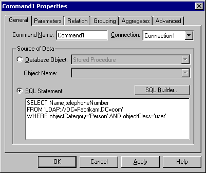
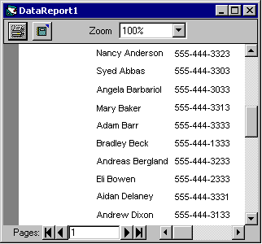

title: Reorganization description: The sales organization has moved to a new organization \ 8212; \ 0034;Sales and Support. \ 0034; Julie Bankert has been promoted to vice president and will lead the new organization. ms.assetid: 38b05d0b-2739-43c2-aac7-7555a5bfbc91 ms.tgt_platform: multiple keywords:
The sales organization has moved to a new organization — "Sales and Support." Julie Bankert has been promoted to vice president and will lead the new organization. Joe Worden, the enterprise administrator, must move Sales OU to a new OU, Sales and Support.
Set dom = GetObject("LDAP://DC=Fabrikam,DC=COM")
Set salesSupport = dom.Create("organizationalUnit", "CN=Sales and Support")
Set sales = salesSupport.MoveHere("LDAP://OU=Sales,DC=Fabrikam,DC=COM", vbNullString)
With this code example, all objects in the sales organizational unit, including the sub-organizational units, are moved to the new organizational unit.
Now, Joe can move Julie into the Sales and Support organizational unit.
Set usr = salesSupport.MoveHere("LDAP://CN=Julie Bankert,OU=Sales,OU=Sales and Support,DC=Fabrikam,DC=COM")
usr.Put "title", "Vice President"
usr.SetInfo
Be aware that the manager-direct report link between Julie Bankert and Chris Gray is automatically updated by Active Directory.
To create an Active Directory report
Open Visual Basic version 6.0, and when prompted for the project type, select Data Project.
On Data Project, double-click Data Environment1.
On the Data Environment window, right-click the connection object (Connection1) and select Properties.
Select OLE DB Provider for Microsoft Directory Services, and click Next.
Select Use Windows NT Integrated security, and click OK. This creates a connection object.
Right-click the Data Environment window again to select Add Command. Right-click the Command1 object and select Properties. The following Command1 Properties dialog box will appear.

Click the SQL Statement option button and type the following:
SELECT Name,telephoneNumber FROM 'LDAP://DC=Fabrikam,DC=com' WHERE objectCategory='Person' AND objectClass='user'
The Command object is created. Add the Command object to the report.
Double-click Data Report1 from the Project window.
Drag the Command1 object from the DataEnvironment1 window to the Detail section in the Data Report window.
On DataReport1 Properties, for DataSource, select DataEnvironment1 from the pull-down menu, and select Command1 in the DataMember field.
On the project window, right-click Data Project, and select DataProject Properties.
On the DataProject - Project Properties dialog window, under Startup Object, select DataReport1 from the pull-down menu. Click OK to save.
Compile. The following DataReport1 dialog box will appear.

Â
Â